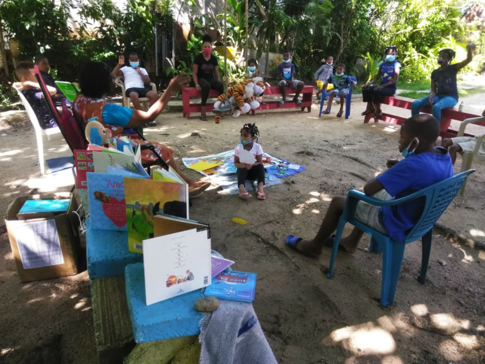
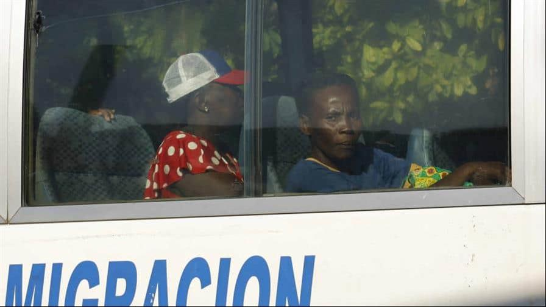

CONTENIDO
Conectividad aerea
El mandatario apuesta por un "turismo limpio" en el nuevo polo de Pedernales y destaca inversión privada en aeropuertos Durante el encuentro LA Semanal con la Prensa, celebrado ayer aquí, el presidente Luis Abinader atribuyó el éxito del turismo dominicano a "las buenas políticas" en conectividad aérea que calificó como "un factor decisivo" para la promoción internacional del país. "Puedes hacer la mayor promoción del turismo en el mundo, pero si no va acompañada de la promoción de la conectividad aérea, no se podrá sostener el crecimiento", resaltó. Mientras proyectaba cifras récords de rutas aéreas que beneficiarán al país, el mandatario dijo que en los últimos cinco años se ha impulsado una estrategia de liberalización que permite atraer nuevas aerolíneas, abrir más destinos y fortalecer la posición de la República Dominicana como centro aéreo regional. Según las proyecciones, Abinader explicó que se espera que el tráfico de pasajeros alcance los 25.8 millones para el año 2030.
MLB pone limites en apuestas

Las nuevas medidas, que entran en vigor de inmediato y se realizan con los socios de casas de apuestas deportivas de MLB, limitarán las apuestas en los llamados mercados de “microapuestas” de lanzamientos individuales a US$200 y excluirán esas apuestas de los parlays. Las medidas se implementarán en los operadores de apuestas deportivas que representan más del 98 por ciento del mercado de apuestas de EE.UU. y, según el comunicado, “tienen como objetivo mitigar los riesgos de integridad y mantener los beneficios de transparencia y acceso a datos que proporciona el mercado regulado de apuestas deportivas”. “Desde que la decisión de la Corte Suprema abrió la puerta a las apuestas deportivas legalizadas, Major League Baseball ha trabajado continuamente con la industria y las partes interesadas regulatorias en todo el país para defender nuestra prioridad más importante: Proteger la integridad de nuestros juegos para los aficionados”, dijo el Comisionado Rob Manfred en el comunicado. “Felicito al Gobernador de Ohio [Mike] DeWine por su liderazgo en este tema durante los últimos meses. También felicito a la industria por trabajar con nosotros para tomar medidas sobre una solución nacional para abordar los riesgos que plantean estos mercados a nivel de lanzamientos, que son particularmente vulnerables a temas de integridad. Esperamos seguir trabajando con todas las partes interesadas, incluidos los operadores de apuestas deportivas con licencia, los funcionarios electos y los reguladores, para asegurar que siempre estemos protegiendo la integridad de nuestro juego”.
turismo

El país fue elegido por la ONU Turismo mediante la resolución 631 (XX) tras presentar su candidatura, mientras que la asamblea será celebrada en el año 2027.La Organización Mundial de Turismo (ONU Turismo) confirmó a República Dominicana para ser la sede de su vigésima séptima Asamblea General, la cual reunirá importantes funcionarios del turismo a nivel mundial. El país fue elegido por la ONU Turismo mediante la resolución 631 tras presentar su candidatura, mientras que la asamblea será celebrada en el año 2027. “La candidatura de la República Dominicana ha recibido el patrocinio de al menos el 10 % de los Estados miembros requeridos en virtud de las directrices para la selección de lugares para las sesiones de la Asamblea General, adoptadas a través de la resolución 631(XX)”, señala un comunicado del organismo.
Estilo de vida
Esta fue la iniciativa que desarrolló en su casa, la maestra Julia Evelin Puello Carmona para que los estudiantes de la escuela Las Hojas Anchas, Distrito 04 02, en Hatillo de la mencionada provincia, pudieran aprender cuando había que poner distancia entre uno y otros. La pandemia pasó, pero el lugar sigue siendo un centro de encuentro para niños y adultos ávidos de lectura.
Entretenimiento
Con la publicación enlazada en la cuenta de ambos, aparentemente, Rivera y Pimentel anunciaron que
tienen una relación amorosa, aunque el texto que acompaña la foto corresponde a la letra de la canción
Con él, de Jenny Rivera.
En medio de la controversia por el lanzamiento del libro en el que habla
sobre el supuesto romance que tuvo con Belinda, Lupillo Rivera apareció con nueva conquista: la modelo
dominicana Taina Pimentel, quien compartió este lunes una fotografía junto al cantante mexicano a través
de su Instagram.
Deportaciones en 2025
Hace un año, el Gobierno dominicano inició los primeros operativos masivos de deportación de haitianos en condición irregular, con el objetivo de retornar hasta 10 mil personas por semana. Desde entonces, las medidas migratorias se han multiplicado y extendido, en el marco de 15 disposiciones presidenciales adoptadas en este 2025 para regular la presencia de extranjeros no documentados en el país. Según los datos de Dirección General de Migración, en los últimos diez meses, han realizado 310,499 repatriaciones, respecto mismo período de 2024, cuando se registraron 180,417 casos, lo que representa un aumento del 72 %.